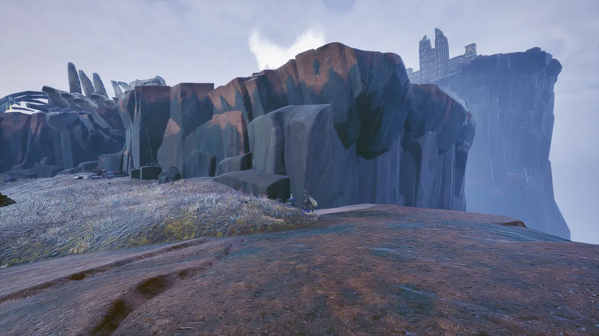
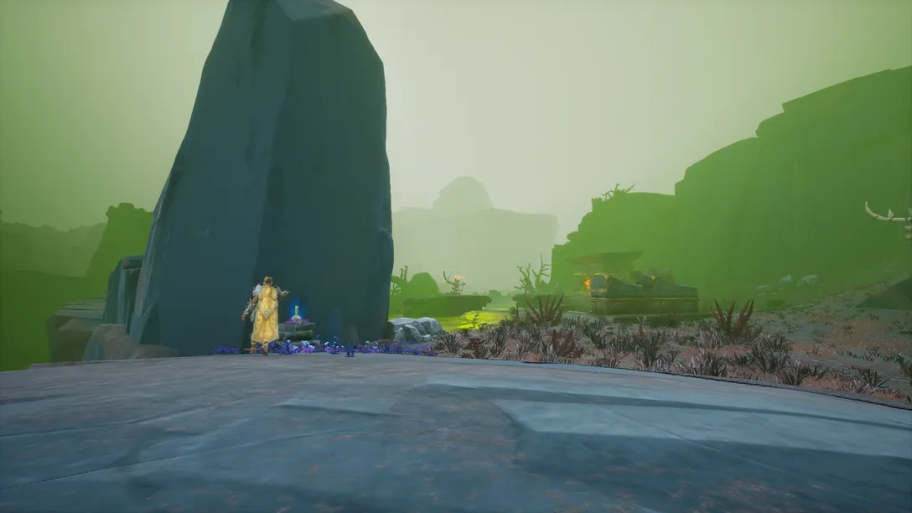
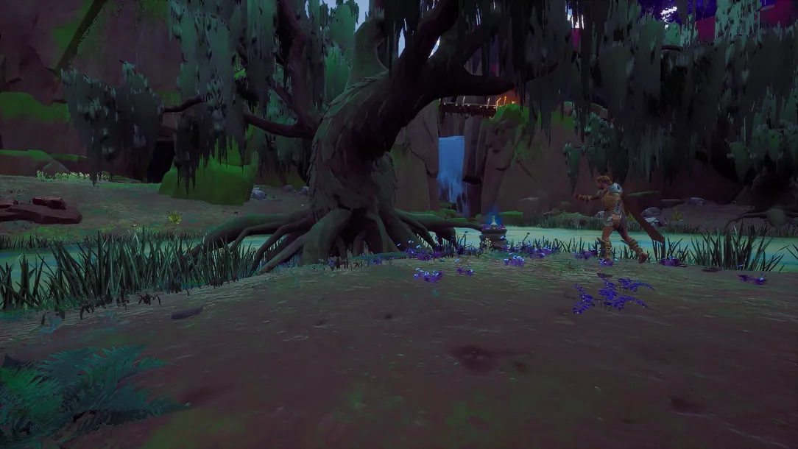
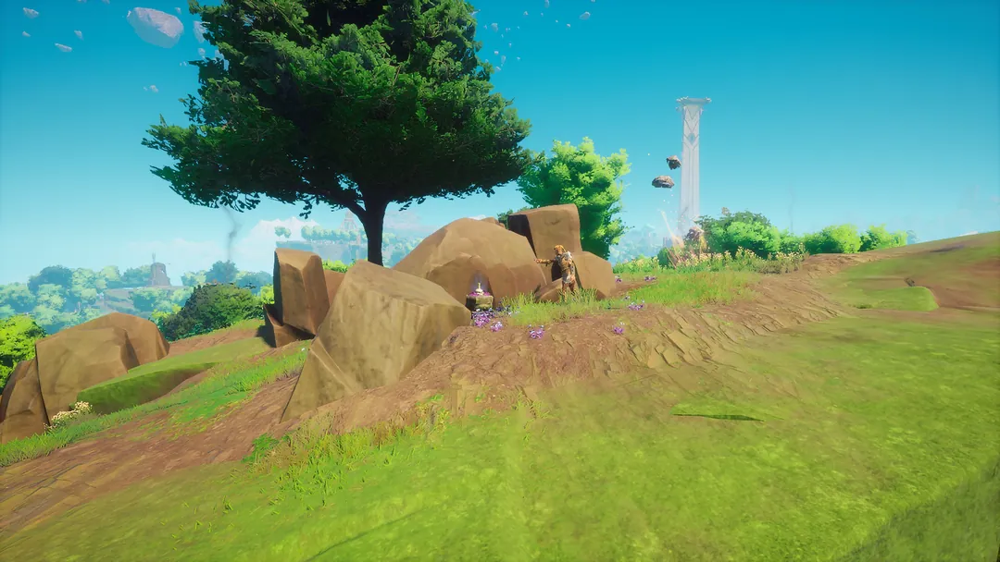

Mirror Mirror is a secondary quest in Fellhollow where you must talk to the mirror to start the quest.
Overview
- Partial completion of Withering Heights for access to Fellhollow.
- Multiple undead
- Either green dragons or dragon wolf
- Multiple Garou
- Multiple Goblins
Walkthrough
A Mysterious Mirror...
To begin this quest, speak to the mirror west of the Emberwood Village past the green dragon. You will hear crying audio when you first approach them.
They will be surprised to see a real living person in Fellhollow since their imprisonment decades ago and recount how a terrible necromancer sealed them within the mirror. While this necromancer first taunted them with the ritual needed to release them, they claim it is simple to do and shouldn't take long. They will ask you to collect the required items for them to start the ritual.
For the ritual, they need some dragon blood, a copy of their spellbook found within Emberwood Village, and some spectral silver thread.
Note: You can kill the nearby green dragon or some dragon wolves for the dragon blood.
Part I: Reagent Collection
For the copy of their spellbook, go into Emberwood Village (you will need to either have gotten past this point in the Withering Heights quest or reactivated the statues on a new world) and find the destroyed windmill. Inside, you will find a bedraggled spellbook. Pick this up, as you will need it.
For the spectral silver thread, you will need to go find Edna's skeleton within Dragon's Run. To find that, look for a crumbling stone house near a willow grove and a rundown gateway. Her skeleton will be sitting back to a corner on the right side. Interact with the skeleton, and the spirit of Edna will inform you that, to make the spectral silver thread, you will need to bring them the following items:
Once you have all these items, bring them back to Edna. Once you hand over the ingredients, the skeleton will perform a series of gestures that will be too quick for you to follow with your eyes. After a moment, the skeleton will hand you the spectral silver thread and return to rest. Once that is done, head back to the mirror.
Part II: The Candles
Speak to the figure in the mirror once again, and they will be happy that you collected all of the reagents. While they will take them off your hands, they mention that you can press them up to the glass, and they will get them. Hand over the reagents, and they will remark about how, while they prepare the ritual on their side, they will need you to tether them back to your reality by rekindling their memories. The reason why is that, due to their age, they have too many memories and need to put some of them safely away. They left a few of their memories as memorial candles within each region they have visited and, for each candle lit, a memory will return to help anchor them into reality. The figure will give you a small piece of their soul to help ignite these memorial candles and, once each candle is lit, they will be to return.
This is where you will need to visit each region of Ashenfall to light the candles. On your map, the candle areas will be highlighted blue. Here is the list of each candle location within the regions:
- Fellhollow: Right next to the mirror.
- Ghornfell:
- Fractured Plains: Next to a small lake south-south-east of Velgar's Rise. The lake has a Rune Essence Geyser in it.
- Stormtouched Highlands: East of the garou castle there is a section of dead dragon's spine at the edge of a cliff. It will be north of the spine, at the edge of the area.

- Bloodblight Swamp: Behind a tall rock west of the garou encampment that is leading towards the bloodwood tree.

- Brynmoor:
- Whispering Swamp: Next to a giant swamp tree on the third most western island from the vault.

- Bramblemead Valley: South of the Crasorak Kara vault entrance, atop the cliff and behind the rocks.



With the final memory candle lit, head back to the mirror.
Part III: A Week-long Ride
Speak to the figure in the mirror, and it will inform you that it will get started on the ritual, but their freedom will take roughly a week or so. While you could wait to see what happens, they inform you that you don't need to stick around that long. You have done everything needed to help free them from their reflective prison and give you a reward for your assistance.
Congratulations! Quest Complete!
Rewards
- 1x Ulv's longbow and the subsequent recipe
This guide is the wiki's Mirror Mirror article, by its editors, reformatted for this site. Licensed CC BY-NC-SA 3.0.